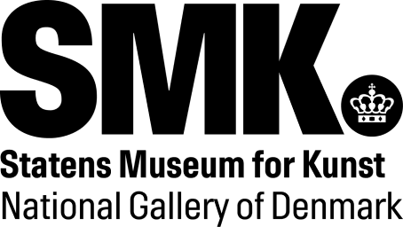

This overview is based on this XML output of the GLAMorous tool d.d. 01-03-2024.
It was generated using the GLAMorousToHTML code.
Also see the documentation of this tool.
This data is also available as an Excel file. More structured data formats (csv, json) will be added in the future.
Available languages
Danish (116)
English (66)
Kotava (51)
French (50)
Swedish (38)
Russian (26)
German (25)
Dutch (22)
Portuguese (19)
Spanish (19)
Italian (17)
Nynorsk (16)
Arabic (15)
Ukrainian (14)
Persian (13)
Basque (12)
Egyptian Arabic (12)
Japanese (12)
Catalan (11)
Greek (11)
Polish (11)
Czech (10)
Nynorsk (10)
Eastern Armenian (9)
Hebrew (8)
Slovene (7)
Finnish (6)
Asturian (5)
Bulgarian (5)
Hungarian (5)
Standard Estonian (5)
Romanian (4)
Chinese (3)
Georgian (3)
Icelandic (3)
Indonesian (3)
Lithuanian (3)
Malagasy (3)
Afrikaans (2)
Cantonese (2)
Croatian (2)
Esperanto (2)
Malayalam (2)
Thai (2)
Urdu (2)
Vietnamese (2)
Azerbaijani (1)
Bangla (1)
Bavarian (1)
Belarusian (1)
Burmese (1)
Cebuano (1)
Galician (1)
Hindi (1)
Ido (1)
Interlingua (1)
Kabyle (1)
Korean (1)
Latin (1)
Latvian (1)
Macedonian (1)
Malay (1)
Maltese (1)
Minnan (1)
Mirandese (1)
Pashto (1)
Punjabi (1)
Slovak (1)
South Azerbaijani (1)
Southern Quechua (1)
Swahili (1)
Tagalog (1)
Tajik (1)
Uzbek (1)
Waray (1)
West Frisian (1)
Western Armenian (1)
Danish (116)
Abraham_Bloemaert |
Adriaen_de_Vries |
Alice |
Amedeo_Modigliani |
Andrea_Mantegna |
Anna_Ancher |
Anna_Petersen |
Armbrøst |
Arnhem |
Arrestbygningen_ved_råd-_og_domhuset |
Arveprins_Frederik |
August_Strindberg |
Begravelse |
Billedhuggeren_Jens_Adolf_Jerichau,_kunstnerens_ægtefælle |
Blomstermaleri |
C.W._Eckersberg |
Carl_Bloch |
Christen_Købke |
Constantin_Hansen |
Cornelis_Cornelisz_van_Haarlem |
Cornelis_Norbertus_Gijsbrechts |
Danmarks_økonomiske_historie |
Dansebakken |
Dansebakken_ved_Sorgenfri |
Dansk_landskab |
Defensionsskib |
Den_danske_guldalder |
Den_flyvende_hollænder |
Det_russiske_linjeskib_"Asow"_og_en_fregat_til_ankers_på_Helsingørs_red |
Dyd |
Dødsriget_(biblen) |
El_Greco |
Elisabeth_Jerichau_Baumann |
En_ung_kunstner_(Ditlev_Blunck)_betragter_en_skitse_i_et_spejl |
Enghave_Plads |
Enhjørning |
Enø |
Erik_Pauelsen |
Federico_Barocci |
Felice_Boselli |
Figurmaleri |
Forsamlingshus |
Frants_Henningsen |
Frederik_Vermehren |
Gerhard_Morell |
Giovanni_Bellini |
Hans_Knudsen_(maler) |
Harald_Giersing |
Harald_Slott-Møller |
Henry_Fuseli |
Hermann_Ernst_Freund |
J.Th._Lundbye |
Jacob_Jordaens |
Jacob_van_Ruisdael |
Jan_van_Goyen |
Jens_Adolf_Jerichau_(billedhugger) |
Juliane_Marie_af_Braunschweig-Wolfenbüttel |
Karel_Dujardin |
Karel_van_Mander_III |
Karel_van_Manders_Gård |
Kastellet |
Kulturværdiudvalget |
Landskabsmaleri |
Legende_børn._Enghave_Plads |
Lucas_Cranach_den_ældre |
Lån |
Martinus_Rørbye |
Melankoli |
Michael_Ancher |
Møns_Klint |
N.F.S._Grundtvig |
Niels_Hansen_Jacobsen |
Nytorv |
Nøgen_kvindelig_model |
P.C._Skovgaard |
P.S._Krøyer |
Parti_af_Østerbro_i_morgenbelysning |
Peter_Hansen_(maler) |
Pigen_fra_Andros |
Prins_Eugen_af_Sverige |
Refleksivitet |
Romantikken |
Romantikken_i_den_danske_litteratur |
Salomon |
Samson |
Sankt_Anna |
Selvportræt |
Skovgaard_Museet |
Skønvirke |
Slagslunde |
Slutterigade |
Sokrates |
Sophie_Amalie_af_Braunschweig-Lüneburg |
Sorgenfri_Slot |
Statens_Museum_for_Kunst |
Stralsund |
Susanna_i_badet |
Søren_Hjorth_Nielsen |
Teamwork |
Theodoor_Rombouts |
Titan_(mytologi) |
Uldjyder |
Ved_et_vindue_i_kunstnerens_atelier |
Venus_(gudinde) |
Vigilius_Eriksen |
Vilhelm_Hammershøi |
Vinterdag_ved_Utterslev |
Værker_af_Anna_Ancher |
Værker_af_C.W._Eckersberg |
Værker_af_Harald_Giersing |
Værker_af_L.A._Ring |
Værker_af_Martinus_Rørbye |
Værker_af_P.S._Krøyer |
Wilhelm_Bendz |
Wilhelm_Marstrand |
Østerbro
English (66)
1550–1600_in_European_fashion |
1830_in_Denmark |
1830s_in_Western_fashion |
A_Young_Artist_(Ditlev_Blunck)_Examining_a_Sketch_in_a_Mirror |
Abraham_Bloemaert |
Alias_Grace_(miniseries) |
Alice_(painting) |
Amedeo_Modigliani |
Anna_Petersen |
Arch_of_Titus |
At_a_Window_in_the_Artist's_Studio |
Bust_of_Camilla_Barbadoni |
Carl_Bloch |
Christ_as_the_Suffering_Redeemer_(Mantegna) |
Christen_Købke |
Cleansing_of_the_Temple |
Constantin_Hansen |
Cornelis_Norbertus_Gijsbrechts |
Coronations_in_Norway |
Danish_Culture_Canon |
Danish_Golden_Age |
Danish_art |
Depiction_of_Jesus |
Elisabeth_Jerichau-Baumann |
Frants_Henningsen |
Frederik_Vermehren |
Gerhard_Morell |
Giovanni_Domenico_Tiepolo |
Gottlieb_Bindesbøll |
Gouache |
Hans_Knudsen_(painter) |
Hudhud_(mythology) |
Joachim_and_Anne_Meeting_at_the_Golden_Gate |
Juliana_Maria_of_Brunswick-Wolfenbüttel |
Karel_van_Mander_III |
List_of_paintings_by_Nicolas_Poussin |
List_of_paintings_by_Rembrandt |
List_of_works_by_Gian_Lorenzo_Bernini |
List_of_works_by_Peder_Severin_Krøyer |
Lorenzo_Cybo |
Ludwig_Ross |
Man_in_a_Plumed_Beret |
Manius_Acilius_Glabrio_(consul_191_BC) |
Martinus_Rørbye |
Matthew_17 |
Michael_Ancher |
National_Gallery_of_Denmark |
Nicolas_Lancret |
Niels_Hansen_Jacobsen |
Nikolaj_Plads_32 |
Nobility_of_Italy |
Ottoman-Habsburg_War_(1565-1568) |
Portrait_of_Lorenzo_Cybo |
Prince_Eugen,_Duke_of_Närke |
Raimondo_Ghelli |
Rembrandt_catalogue_raisonné,_1935 |
Samson |
Samson_and_Delilah_(opera) |
Strandgade_30 |
Temple_tax |
The_Waagepetersen_Family_(Bendz) |
Waagepetersen_House |
Wilhelm_Bendz |
Winter_landscapes_in_Western_art |
Women_in_the_Ottoman_Empire |
Østerbrogade
Kotava (51)
1810 |
1848 |
Alice_(trutca_ke_Modigliani) |
Amazzone_okolikya_(trutca_ke_Modigliani) |
Antonia_(trutca_ke_Modigliani) |
Ayikya_dem_piakofa_vinotca_(trutca_ke_Modigliani) |
Ayikya_disa_va_faltiteem_(trutca_ke_Modigliani) |
Blakerafa_java_(trutca_ke_Modigliani) |
Blakerikya_(trutca_ke_Modigliani) |
Chakoska_(trutca_ke_Modigliani) |
Christen_Købke |
Christoffer_Wilhelm_Eckersberg |
Constantin_Hansen |
Danmarkaf_Moavugal |
Danmarkaf_lingesik |
Debanyesa_Almaiisa_(trutca_ke_Modigliani) |
Debanyesa_listikya_(trutca_ke_Modigliani) |
Debanyesikya_dem_faltaf_klaim_(trutca_ke_Modigliani) |
Delt_Lunia_Czechowska_dem_ruelga_(trutca_ke_Modigliani) |
Delt_va_Beatrice_Hastings_(trutca_ke_Modigliani) |
Delt_va_Beatrice_Hastings_kabdue_tuvel_(trutca_ke_Modigliani) |
Delt_va_Cecile_van_Muyden_(trutca_ke_Modigliani) |
Delt_va_Elena_Pavlowski_(trutca_ke_Modigliani) |
Delt_va_Lunia_Czechowska_(1)_(trutca_ke_Modigliani) |
Delt_va_Lunia_Czechowska_(2)_(trutca_ke_Modigliani) |
Delt_va_Lunia_Czechowska_dem_batakaf_klaim_(trutca_ke_Modigliani) |
Delt_va_Pauline_Jourdain_(trutca_ke_Modigliani) |
Delt_va_Reynouard_W-ya_(trutca_ke_Modigliani) |
Delt_va_debanyesa_Margherita_(trutca_ke_Modigliani) |
Delt_va_mawakwikya_(trutca_ke_Modigliani) |
Dorival_Weltikya_(trutca_ke_Modigliani) |
Drogeristin_listikya_(trutca_ke_Modigliani) |
Elvira_ladavagisa_va_azega_(trutca_ke_Modigliani) |
Faltakirafa_rumeikya_(trutca_ke_Modigliani) |
Frederik_Vermehren |
Kisling_Weltikya_(trutca_ke_Modigliani) |
Klaimkirafa_listikya_(trutca_ke_Modigliani) |
L'Ebrea_(trutca_ke_Modigliani) |
Listikya_dem_edji_(trutca_ke_Modigliani) |
Listikya_dem_urtkiraf_ulimey_(trutca_ke_Modigliani) |
Martinus_Rørbye |
Mawakwikya_(trutca_ke_Modigliani) |
Michael_Peter_Ancher |
Pompadour_Weltikya_(trutca_ke_Modigliani) |
Ranyesa_karyatides_kudja_(trutca_ke_Modigliani) |
Renée_(trutca_ke_Modigliani) |
Rom_saneikya_do_velik_(trutca_ke_Modigliani) |
Skagen_serna |
Trutceem_ke_Modigliani |
Wilhelm_Bendz |
Yikya_dem_blafotafe_vage_(trutca_ke_Modigliani)
French (50)
1815_en_arts_plastiques |
Adrien_de_Vries |
Alice_(Modigliani) |
Amedeo_Modigliani |
Arc_de_Titus |
Asphodèle |
Baroccio |
Canon_de_la_culture_danoise |
Catalogue_de_l'œuvre_peint_de_Pieter_Brueghel_l'Ancien |
Christoffer_Wilhelm_Eckersberg |
Château_de_Saint-Cloud |
Cornelis_Norbertus_Gysbrechts |
Culture_du_Danemark |
Elisabeth_Jerichau-Baumann |
Expulsion_des_marchands_du_Temple |
Filippino_Lippi |
Frants_Henningsen |
Frederik_Vermehren |
Fête_galante |
Hans_Knudsen_(peintre) |
Harald_Giersing |
Jan_Vermeer_van_Haarlem_le_jeune |
Juliane-Marie_de_Brunswick |
La_Chute_des_Titans |
Le_Christ_aux_plaies |
Le_Christ_mort_soutenu_par_deux_anges_(Mantegna) |
Liste_d'œuvres_d'Andrea_Mantegna |
Liste_de_tableaux_de_Francesco_Guardi |
Liste_des_peintures_de_Nicolas_Poussin |
Liste_des_tableaux_de_Rembrandt |
Liste_des_œuvres_de_Jérôme_Bosch |
Livre_de_la_Sagesse |
Lucas_Cranach_l'Ancien |
Ludolf_Bakhuizen |
Martin_Schongauer |
Michael_Peter_Ancher |
Médaille_Thorvaldsen |
Niels_Hansen_Jacobsen |
Paysage_d'hiver_dans_l'art_en_Europe |
Portrait_d'homme_(Titien,_Copenhague) |
Portrait_de_Lorenzo_Cybo |
Quatre_coins |
Statens_Museum_for_Kunst |
Theodore_Rombouts |
Trompe-l'œil |
Trompe-l'œil_:_Dos_d'un_tableau |
Un_groupe_d'artistes_danois_à_Rome |
Vigilius_Erichsen |
Vilhelm_Hammershøi |
Vue_à_travers_trois_des_arches_du_nord-ouest_du_troisième_étage_du_Colisée_de_Rome
Swedish (38)
Abraham_Bloemaert |
Alice_(målning) |
Anna_Ancher |
Arrestbyggnaden_vid_råd-_och_domstolshuset_i_Köpenhamn |
Carl_Bloch |
Christoffer_Wilhelm_Eckersberg |
Constantin_Hansen |
Den_unge_konstnären_Ditlev_Blunck_skärskådar_en_skiss_i_spegeln |
Egyptisk_krukförsäljerska_i_Giza |
Elisabeth_Jerichau_Baumann |
Eudamidas_testamente |
Frederik_Vermehren |
Första_Kungaboken |
Gerhard_Morell |
Johan_Thomas_Lundbye |
Juliana_Maria_av_Braunschweig-Wolfenbüttel |
Karel_van_Mander_den_yngste |
Korsfästelsen_(målning_av_Cranach) |
Kristian_II |
Kristian_Zahrtmann |
Kristus_som_den_lidande_frälsaren |
Kurfurst_Fredrik_den_vises_hjortjakt |
Michael_Ancher |
Nytorv |
Oväder_i_skärgården |
Porträtt_av_Lorenzo_Cybo |
Porträtt_av_den_venetianske_målaren_Giovanni_Bellini |
Porträtt_av_skulptören_Jens_Adolf_Jerichau,_konstnärens_make |
Prins_Eugen_av_Sverige |
Riddaren_med_falken |
Ryska_linjeskeppet_Asow_och_en_fregatt_för_ankar_på_Helsingörs_redd |
Salomo |
Simson_hos_filistéerna |
Sjösättning._Skagen |
Sårad_dansk_soldat |
Utsikt_genom_tre_bågar_på_Colosseums_tredje_våning |
Vigilius_Eriksen |
Østerbro_i_morgonljus
Russian (26)
Man_of_war |
Азов_(линейный_корабль,_1826) |
Алиса_(картина) |
Асфоделус_ветвистый |
Бендз,_Вильгельм |
Блох,_Карл_Генрих |
Вермерен,_Фредерик |
Гуашь |
Де_Йоде,_Питер_(старший) |
Египтизирующий_стиль |
Изображение_Иисуса_Христа_в_мировой_культуре |
Йенсен,_Кристиан_Альбрехт |
Карел_ван_Мандер_III |
Кливидж |
Культурный_канон_Дании |
Кёбке,_Кристен |
Петерсен,_Анна |
Портреты_Эль_Греко |
Салочки |
Список_картин_Амедео_Модильяни |
Список_картин_Рембрандта |
Список_картин_Эль_Греко |
Хансен,_Петер_(художник) |
Хеннингсен,_Франц |
Эккерсберг,_Кристоффер_Вильхельм |
Янсенс,_Абрахам
German (25)
Christen_Købke |
Christine_Løvmand |
Constantin_Hansen |
Cornelis_Norbertus_Gijsbrechts |
Cornelis_van_Haarlem |
Dänemark |
Fangen |
Frederik_Vermehren |
Giovanni_Domenico_Tiepolo |
Jean-Louis_Boussingault |
Johann_Georg_von_Bemmel |
Käthe_Kollwitz |
Louis_Tocqué |
Marie_Henriques |
Martinus_Rørbye |
Maximilian_Neustück |
Megalithanlagen_im_Knudsskov |
Michel_Sittow |
P._C._Skovgaard |
Peter_Hansen_(Maler) |
Rot_(Haarfarbe) |
Rückenfigur |
Schmerzensmann |
Trompe-l’œil |
Ästiger_Affodill
Dutch (22)
1524 |
Christiaan_II_van_Denemarken |
Christus_als_de_lijdende_verlosser |
De_dode_Christus_met_engelen |
De_familie_Waagepetersen |
Deense_kunstenaars_in_de_osteria_la_Gonsola_in_Rome |
El_Greco |
Eugenius_van_Zweden |
Karel_van_Mander_(III) |
Keukenstuk |
Lijst_van_koningen_van_Noorwegen |
Lijst_van_koningen_van_Zweden |
Lijst_van_schilderijen_van_Rembrandt_van_Rijn |
Lijst_van_staatshoofden_van_Finland |
Lijst_van_staatshoofden_van_IJsland |
Lijst_van_werken_van_Andrea_Mantegna |
Madonna_van_de_steengroeve |
Man_met_gepluimde_baret |
Portret_van_Lorenzo_Cybo |
Portret_van_Matthaeus_Yrsselius |
Portret_van_een_man_(El_Greco) |
Statens_Museum_for_Kunst
Portuguese (19)
Busto_de_Camilla_Barbadoni |
Béroe_(ninfa) |
Christoffer_Wilhelm_Eckersberg |
Constantin_Hansen |
Cornelis_Norbertus_Gysbrechts |
Eugênio,_Duque_da_Nerícia |
Giovanni_Bellini |
Giovanni_Domenico_Tiepolo |
Juliana_Maria_de_Brunsvique-Volfembutel |
Lista_das_obras_de_Hieronymus_Bosch |
Lista_de_obras_de_Nicolas_Poussin |
Lista_de_obras_de_arte_de_Lucas_Cranach,_o_Velho |
Lista_de_pinturas_de_El_Greco |
Lista_de_pinturas_de_Rembrandt |
Lista_de_pinturas_de_Suzanne_Valadon |
Lista_dos_soberanos_de_Massa_e_Carrara |
Lorenzo_Cybo |
Representação_de_Jesus_na_arte |
Sansão
Spanish (19)
Anna_Petersen |
Asphodelus_ramosus |
Canon_Cultural_Danés |
Constantin_Hansen |
Ditlev_Blunck |
Edad_de_Oro_danesa |
Galería_Nacional_de_Dinamarca |
Joaquín_(padre_de_María) |
Joaquín_y_Ana_se_encuentran_ante_la_Puerta_Dorada |
Mujeres_en_el_Imperio_otomano |
Niels_Hansen_Jacobsen |
Nytorv |
Peter_Hansen_(pintor) |
Retrato_de_Giovanni_Battista_Porta |
Salomón |
Teogonía |
Un_joven_artista_(Ditlev_Blunck)_observa_un_boceto_en_un_espejo |
Varón_de_dolores |
Wilhelm_Bendz
Italian (17)
Alice_(Modigliani) |
Andrea_Palladio |
Arco_di_Trionfo_(Firenze) |
Busto_di_Camilla_Barbadori |
Carl_Heinrich_Bloch |
Dipinti_di_Nicolas_Poussin |
Elisabeth_Jerichau-Baumann |
Federico_V_di_Danimarca |
Felice_Boselli |
Giuliana_Maria_di_Brunswick-Lüneburg |
Incontro_alla_Porta_d'Oro |
Karel_van_Mander_III |
Opere_di_Amedeo_Modigliani |
Opere_di_Gian_Lorenzo_Bernini |
Peter_Hansen |
Storia_della_moda_1550-1600 |
Vittore_e_Corona
Nynorsk (16)
1815_i_Danmark |
Christian_II_av_Danmark,_Norge_og_Sverige |
Christoffer_Wilhelm_Eckersberg |
Danmarks_kulturkanon |
Den_danske_gullalder |
Elisabeth_Jerichau_Baumann |
Giovanni_Bellini |
Jens_Juel_(maler) |
Johan_Frederik_Nikolai_Vermehren |
Karel_van_Mander_(1609–1670) |
Niels_Hansen_Jacobsen |
Prins_Eugen |
Renessanse_og_reformasjon_i_Europa |
Samson_(person) |
Skyggen |
Statens_Museum_for_Kunst
Arabic (15)
آنا_كيرستين_أنشر |
أرتميس |
إبراهام_بلومارت |
إليزابث_يريشاو_باومان |
المعرض_الوطني_الدنماركي |
بيدير_كروير |
تطهير_المسيح_للهيكل |
سورن_هيورث_نيلسن |
فيلهلم_هامرشوي |
قوس_تيتوس |
كمال_أجسام |
لقاء_يهوياقيم_وحنة_في_البوابة_الذهبية |
ميشال_بيتر_آنشر |
نيكولاي_أبيلدجارد |
نيلز_هانسن_جاكوبسن
Ukrainian (14)
Asphodelus_ramosus |
Євген_Шведський |
Амалія_Нассау-Діц_(1655–1695) |
Генрих_Казимир_ІІ_Нассау-Дицький |
Державний_музей_мистецтв_(Копенгаген) |
Квач_(гра) |
Корнеліс_Гейсбрехтс |
Корнеліс_Корнеліссен_ван_Гарлем |
Лоренцо_Берніні |
Мановар |
Новоєгипетський_стиль |
Погруддя_Констанци_Бонучеллі |
Портрет_у_мистецтві_17_століття_(книга) |
Феліче_Бозеллі
Persian (13)
آبراهام_بلومرت |
آلیس_(نقاشی) |
آمبرسیوس_بوسخارت |
آندرئا_مانتنیا |
الیزابت_یریکو-باومن |
سلیمان |
طبیعت_بیجان |
مایکل_آنکر |
نگارخانه_ملی_دانمارک |
پرتره_لورنزو_کیبو |
پیتر_ارتسن |
کارل_بلوک |
کریستن_کوبکه
Basque (12)
Abraham_Bloemaert |
Artista_gazte_bat_(Ditlev_Blunck)_zirriborro_bati_begira_ispilu_batean |
Christen_Købke |
Danimarkako_Galeria_Nazionala |
Euken_Suediakoa |
Frederik_Vermehren |
Giovanni_Bellini |
Michael_Ancher |
Nicolas_Lancret |
Opiar_legea |
Wilhelm_Bendz |
Zerrenda:Rembrandten_margolanak
Egyptian Arabic (12)
آنا_بيترسن |
المسيح_كمخلص_يتالم |
اليس_(لوحه) |
اندلاع_بركان_فيزوف_1820 |
باقه_من_الزهور_عند_سفح_الشجره._على_فرع_معلقه_اكليل |
بروق_متفرع |
بورتريه_من_جانب_لورنزو |
جنازه_(لوحه) |
جوفانى_بيلينى |
قوس_تيتوس_فى_روما |
كاريل_فان_ماندريه_التالت |
ميشال_بيتر_انشر
Japanese (12)
ウィギリウス・エリクセン |
クリスチャン・サートマン |
クリステン・ケプケ |
クリストファー・ヴィルヘルム・エッカースベルグ |
コペンハーゲン国立美術館 |
コルネリス・ノルベルトゥス・ヘイスブレヒツ |
サムソン |
ジョヴァンニ・ドメニコ・ティエポロ |
フィリップス・アウフスティン・イメンラート |
ミカエル・アンカー |
ヴィルヘルム・ベンズ |
贖い主としてのキリスト_(マンテーニャ)
Catalan (11)
Constantin_Hansen |
Edat_d'or_danesa |
Giovanni_Bellini |
Llista_d'obres_de_Gian_Lorenzo_Bernini |
Nicolas_Poussin |
Oppia |
Príncep_Eugeni |
Retrat_d'un_cavaller_(El_Greco,_Copenhaguen) |
Retrat_de_l'escultor_Jens_Adolf_Jerichau,_el_marit_de_l'artista |
Samson_et_Dalila |
Un_jove_artista_(Ditlev_Blanck)_observa_un_esbós_en_un_mirall
Greek (11)
Άμπραχαμ_Μπλούμερτ |
Εικαστικές_τέχνες |
Ιουλιάνα_Μαρία_του_Μπράουνσβαϊγκ-Βολφενμπύτελ |
Κατάλογος_έργων_του_Αμεντέο_Μοντιλιάνι |
Κατάλογος_έργων_του_Αντρέα_Μαντένια |
Κατάλογος_έργων_του_Νικολά_Πουσέν |
Κατάλογος_έργων_του_Ρέμπραντ |
Κορνέλις_Νορμπέρτους_Χάισμπρεχτς |
Μίκαελ_Άνκερ |
Πέτερ_Πάουλ_Ρούμπενς |
Τζοβάνι_Μπελλίνι
Polish (11)
Amedeo_Modigliani |
Berek |
Christen_Købke |
Jens_Adolf_Jerichau |
Karnawał_w_Wenecji |
Lucas_Cranach_starszy |
Maria_z_Nazaretu |
Michael_Ancher |
Państwowe_Muzeum_Sztuki_w_Kopenhadze |
Roskilde_Fjord |
Sen_Mitroanii
Czech (10)
Abraham_Bloemaert |
Amedeo_Modigliani |
Christen_Købke |
Evžen_Švédský |
Jeseteři |
Juliana_Marie_Brunšvická |
Státní_muzeum_umění |
Svatí_Viktor_a_Korona |
Svatý_Jáchym |
Thór
Nynorsk (10)
1481 |
Christoffer_Wilhelm_Eckersberg |
Constantin_Hansen |
Danmarks_kulturkanon |
Dansk_kunst |
Giovanni_Bellini |
Jens_Jørgensen_Juel |
Kristian_II_av_Noreg,_Danmark_og_Sverige |
Samson_i_Bibelen |
Udsigt_gennem_tre_af_de_nordvestlige_buer_i_Colosseums_tredje_stokværk
Eastern Armenian (9)
Ալիսա_(նկար,_Մոդիլյանի) |
Աննա_Պետերսեն |
Դանիայի_ազգային_պատկերասրահ |
Էլիզաբեթ_Յերիխաու-Բաուման |
Կանայք_Օսմանյան_կայսրությունում |
Միքայել_Անկեր |
Ջովաննի_Բելլինի |
Ռեմբրանդի_նկարների_ցանկ |
Տիտոսի_հաղթակամար
Hebrew (8)
דטלף_בלונק |
הלוויה |
וילהלם_בנד |
יוליאנה_מריה_מבראונשווייג-וולפנביטל |
לטענת_גרייס_(סדרה) |
מיקל_אנקה |
משפט_שלמה |
ניקולאי_אבידגור
Slovene (7)
Danska_zlata_doba |
Evgen_Švedski |
Gvaš |
Kristus,_trpeči_odrešenik_(Mantegna) |
Salomon |
Titov_slavolok,_Rim |
Upodobitve_Jezusa
Finnish (6)
Frants_Henningsen |
Luettelo_varhaisista_Tanskan_hallitsijoista |
Michael_Ancher |
Salomo |
Sorgenfrin_linna |
Tanskan_kulttuurikaanon
Asturian (5)
Asphodelus_ramosus |
Giovanni_Bellini |
Semeya_del_escultor_Jens_Adolf_Jerichau,_l'home_de_l'artista |
Teogonía |
Un_mozu_artista_(Ditlev_Blunck)_repara_un_bocetu_nun_espeyu
Bulgarian (5)
Копенхагенски_съд |
Корнелис_Гийсбрехтс |
Петер_Паул_Рубенс |
Тромп-л'ьой |
Юлиана_фон_Брауншвайг-Волфенбютел
Hungarian (5)
Abraham_Bloemaert |
Isaac_Oliver |
Jenő_svéd_királyi_herceg |
Julianna_Mária_dán_királyné |
Michael_Ancher
Standard Estonian (5)
Alice_(Modigliani) |
Christen_Købke |
Elisabeth_Jerichau-Baumann |
Michael_Peter_Ancher |
Taani_kultuurikaanon
Romanian (4)
Christoffer_Wilhelm_Eckersberg |
Giovanni_Bellini |
Isus_din_Nazaret_în_artă |
Nicolas_Lancret
Chinese (3)
尤金王子_(內爾徹公爵) |
彼得·保罗·鲁本斯 |
朱麗安妮·瑪麗_(不倫瑞克-沃爾芬比特爾)
Georgian (3)
ალისა_(მოდილიანი) |
დანიის_ეროვნული_გალერეა |
იულიანა_მარია_ბრაუნშვაიგ-ვოლფენბიუტელი
Icelandic (3)
Frederik_Vermehren |
Júlíana_María_af_Braunschweig-Wolfenbüttel |
Michael_Ancher
Indonesian (3)
Gerbang_Titus |
Hakim-Hakim_16 |
Yoakim_dan_Anna_Bertemu_di_Gerbang_Emas
Lithuanian (3)
Abraham_Bloemaert |
Amedeo_Modigliani |
Pieter_Aertsen
Malagasy (3)
Boky_voalohan'_ny_Mpanjaka |
Giovanni_Bellini |
Sôlômôna
Afrikaans (2)
Lys_van_werke_van_Rembrandt_van_Rijn |
Salomo
Cantonese (2)
喬瓦尼·貝利尼 |
所羅門王
Croatian (2)
Kiseli_ruj |
Stilovi_aranžiranja_cvijeća
Esperanto (2)
Giovanni_Bellini |
Wilhelm_Bendz
Malayalam (2)
ആലീസ്_(ചിത്രം) |
പോർട്രയിറ്റ്_ഓഫ്_ലോറെൻസോ_സൈബോ
Thai (2)
ซาโลมอน |
เจ้าชายยูจีน_ดยุกแห่งนาร์ก
Urdu (2)
تصلیب_مسیح |
تیتان_(علم_الاساطیر)
Vietnamese (2)
Asphodelus_ramosus |
Salomon
Azerbaijani (1)
Dövlət_incəsənət_muzeyi
Bangla (1)
সলোমন
Bavarian (1)
Schmeaz'nsmau
Belarusian (1)
Крыстэн_Кёбке
Burmese (1)
ဆော်လမွန်ဘုရင်
Cebuano (1)
Asphodelus_ramosus
Galician (1)
Giovanni_Bellini
Hindi (1)
सुलैमान
Ido (1)
Christen_Købke
Interlingua (1)
Salomon
Kabyle (1)
Michael_Ancher
Korean (1)
예수의_묘사
Latin (1)
Ioannes_Bellinus
Latvian (1)
Valsts_mākslas_muzejs_(Dānija)
Macedonian (1)
Амедео_Модиљани
Malay (1)
Pembersihan_Bait_Suci
Maltese (1)
Amedeo_Modigliani
Minnan (1)
Só͘-lô-bûn
Mirandese (1)
Cristiano_II_de_Dinamarca
Pashto (1)
سليمان
Punjabi (1)
تصلیب_مسیح
Slovak (1)
Joachim_(svätec)
South Azerbaijani (1)
سلیمان
Southern Quechua (1)
Giovanni_Bellini
Swahili (1)
Yesu_katika_sanaa
Tagalog (1)
Giovanni_Bellini
Tajik (1)
Ҷованни_Беллини
Uzbek (1)
Abraham_Bloemaert
Waray (1)
Asphodelus_ramosus
West Frisian (1)
Simson
Western Armenian (1)
Դանիա